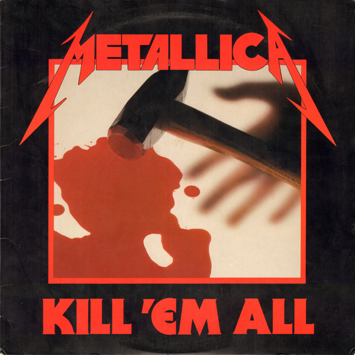
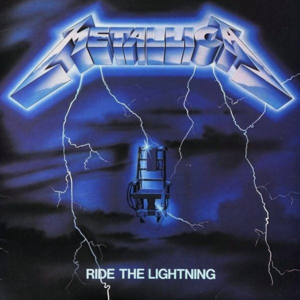
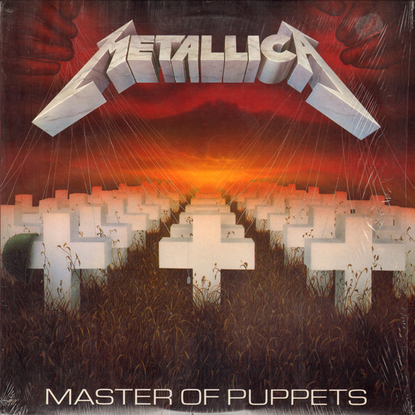
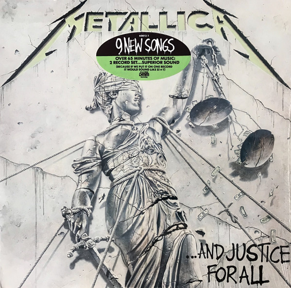
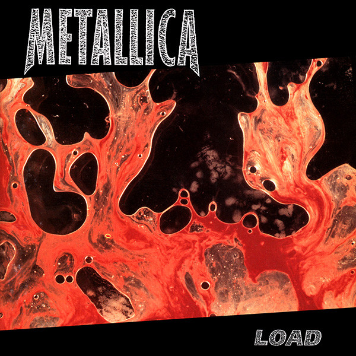
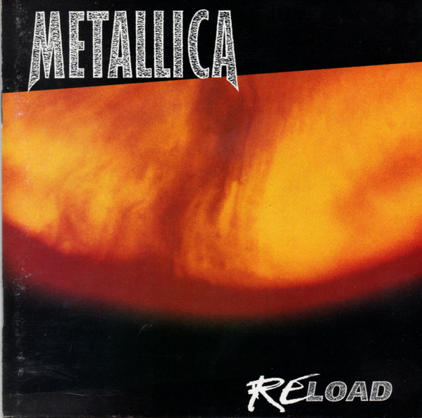
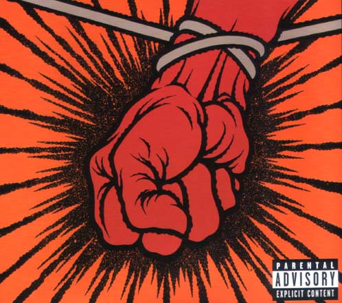
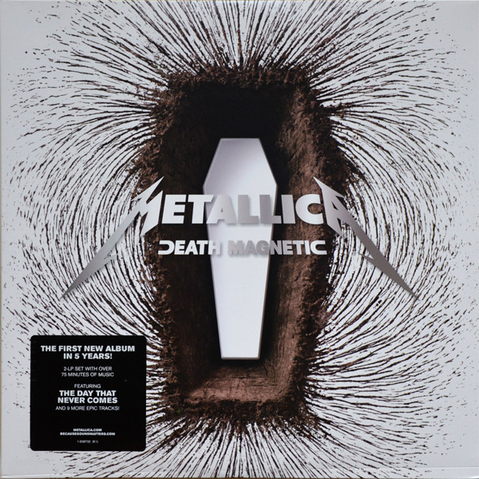
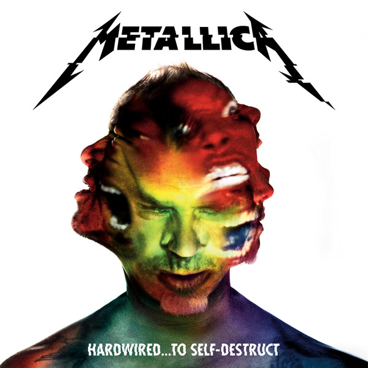

Discografía
Kill 'Em All

- Hit The Lights - 4:17
- The Four Horsemen - 7:08
- Motorbreath - 3:03
- Jump In The Fire - 4:50
- (Anesthesia)-Pulling Teeth - 3:27
- Whiplash - 4:06
- Phantom Lord - 4:52
- No Remorse - 6:24
- Seek & Destroy - 6:50
- Metal Militia - 6:06
Ride the Lightning

- Fight Fire With Fire - 4:44
- Ride The Lightning - 6:36
- For Whom The Bell Tolls - 5:10
- Fade To Black - 6:56
- Trapped Under Ice - 4:03
- Escape - 4:23
- Creeping Death - 6:36
- The Call Of Ktulu - 8:52
Master of Puppets

- Battery - 5:10
- Master Of Puppets - 8:38
- The Thing That Should Not Be - 6:32
- Welcome Home (Sanitarium) - 6:28
- Disposable Heroes - 8:14
- Leper Messiah - 5:38
- Orion - 8:12
- Damage, Inc. - 5:08
...And Justice for All

- Blackened - 6:40
- ...And Justice For All - 9:44
- Eye Of The Beholder - 6:25
- One - 7:24
- The Shortest Straw - 6:35
- Harvester Of Sorrow - 5:42
- The Frayed Ends Of Sanity - 7:40
- To Live Is To Die - 9:48
- Dyers Eve - 5:12
Black Album

- Enter Sandman - 5:29
- Sad But True - 5:24
- Holier Than Thou - 3:47
- The Unforgiven - 6:26
- Wherever I May Roam - 6:42
- Don't Tread On Me - 3:59
- Through The Never - 4:01
- Nothing Else Matters - 6:29
- Of Wolf And Man - 4:16
- The God That Failed - 5:05
- My Friend Of Misery - 6:47
- The Struggle Within - 3:51
Load

- Ain't My Bitch - 5:04
- 2 X 4 - 5:28
- The House Jack Built - 6:38
- Until It Sleeps - 4:29
- King Nothing - 5:28
- Hero Of The Day - 4:21
- Bleeding Me - 8:18
- Cure - 4:54
- Poor Twisted Me - 4:00
- Wasting My Hate - 3:57
- Mama Said - 5:19
- Thorn Within - 5:51
- Ronnie - 5:17
- The Outlaw Torn - 9:48
Reload

- Fuel 4:29
- The Memory Remains - 4:39
- Devil's Dance - 5:18
- The Unforgiven II - 6:36
- Better Than You - 5:21
- Slither - 5:13
- Carpe Diem Baby - 6:12
- Bad Seed - 4:05
- Where The Wild Things Are - 6:52
- Prince Charming - 6:04
- Low Man's Lyric - 7:36
- Attitude - 5:16
- Fixxxer - 8:15
St. Anger

- Frantic - 5:50
- St. Anger - 7:21
- Some Kind Of Monster - 8:26
- Dirty Window - 5:25
- Invisible Kid - 8:30
- My World - 5:46
- Shoot Me Again - 7:10
- Sweet Amber - 5:27
- The Unnamed Feeling - 7:09
- Purify - 5:14
- All Within My Hands - 8:48
Death Magnetic

- That Was Just Your Life - 7:10
- The End Of The Line - 7:50
- Broken, Beat & Scarred - 6:25
- The Day That Never Comes - 7:55
- All Nightmare Long - 8:01
- Cyanide - 6:41
- The Unforgiven III - 7:47
- The Judas Kiss - 8:02
- Suicide & Redemption - 10:02
- My Apocalypse - 5:01
Hardwired... to Self-Destruct

- Hardwired - 3:09
- Atlas, Rise! - 6:28
- Now That We're Dead - 6:59
- Moth Into Flame - 5:50
- Am I Savage? - 6:29
- Halo On Fire - 8:15
- Confusion - 6:41
- Dream No More - 6:29
- ManUNkind - 6:55
- Here Comes Revenge - 7:17
- Murder One - 5:45
- Spit Out The Bone - 7:09